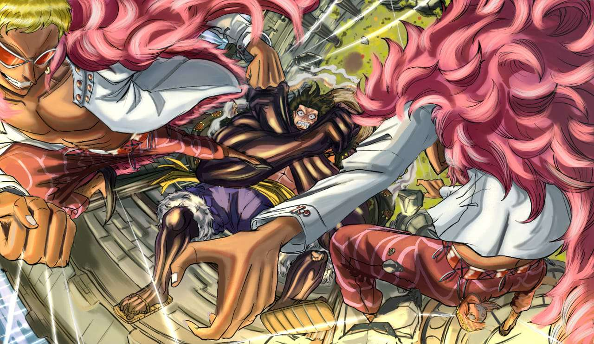

Zatana

This is Paul Okafor's black and white variation of Zatanna Zatara.
Zatanna is the daughter of magician Giovanni "John" Zatara who
appeared in Golden Age comic books and Sindella, a member of
the mystical species Homo magi. Her younger cousin, the teenager Zachary Zatara, is also a magician in the DCU.
Luffy v Doflamingo

This art piece is inspired by the
One Piece battle between Luffy and Doflamingo.
ONE PIECE is a legendary high-seas quest unlike any other. Luffy is a young adventurer
who has longed for a life of freedom ever since he can remember. He sets off from his small
village on a perilous journey to find the legendary fabled treasure, ONE PIECE,
to become King of the Pirates!
Cammy

This white background portrait piece is called "Cammy".
It is inspired by the Street Fighter character, and its style is likely drawn based on the new
Street Fightergame.
As we can see from the art, Cammy is a fighter with a slender yet muscular body. She has long blonde hair which she usually
wears in two braided pigtails, blue eyes and a scar on her left cheek.